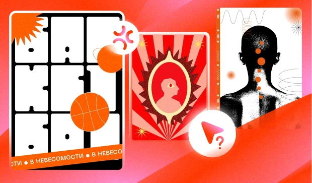
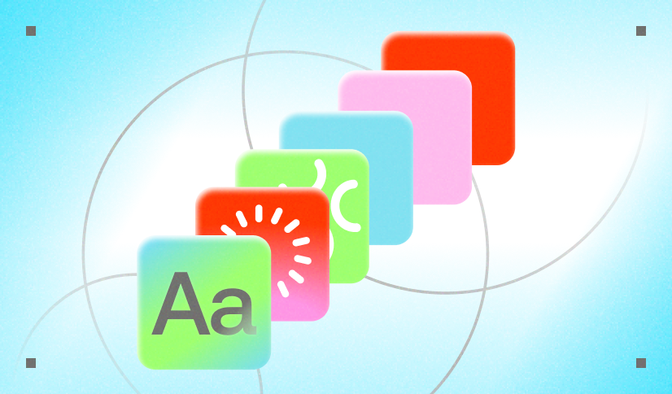
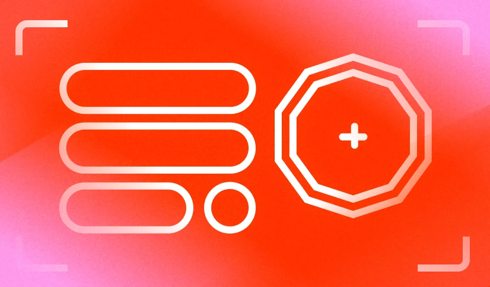

Содержание
Практическая часть проводит от самой идеи до публикации работы. Каждая глава — этап процесса. Сначала понимаем, что хотим сделать, только потом проектируем.
2.1 Идея и концепция
Теория · 3 статьи

Теория · 6 минут
Как придумать тему
Откуда брать идеи и как проверить, что тема не слишком абстрактная и не развалится в процессе.

Теория · 4 минуты
Как найти стиль
Минимализм, хаос, пиксели, коллажи и прочее, как найти стиль для развития нарратива плаката

Теория · 4 минуты
Статичные и динамичные модули
Определяем интерактив и анимации в веб-плакате на этапе концепции
2.2 Разработка макета
Дизайн · 6 статей